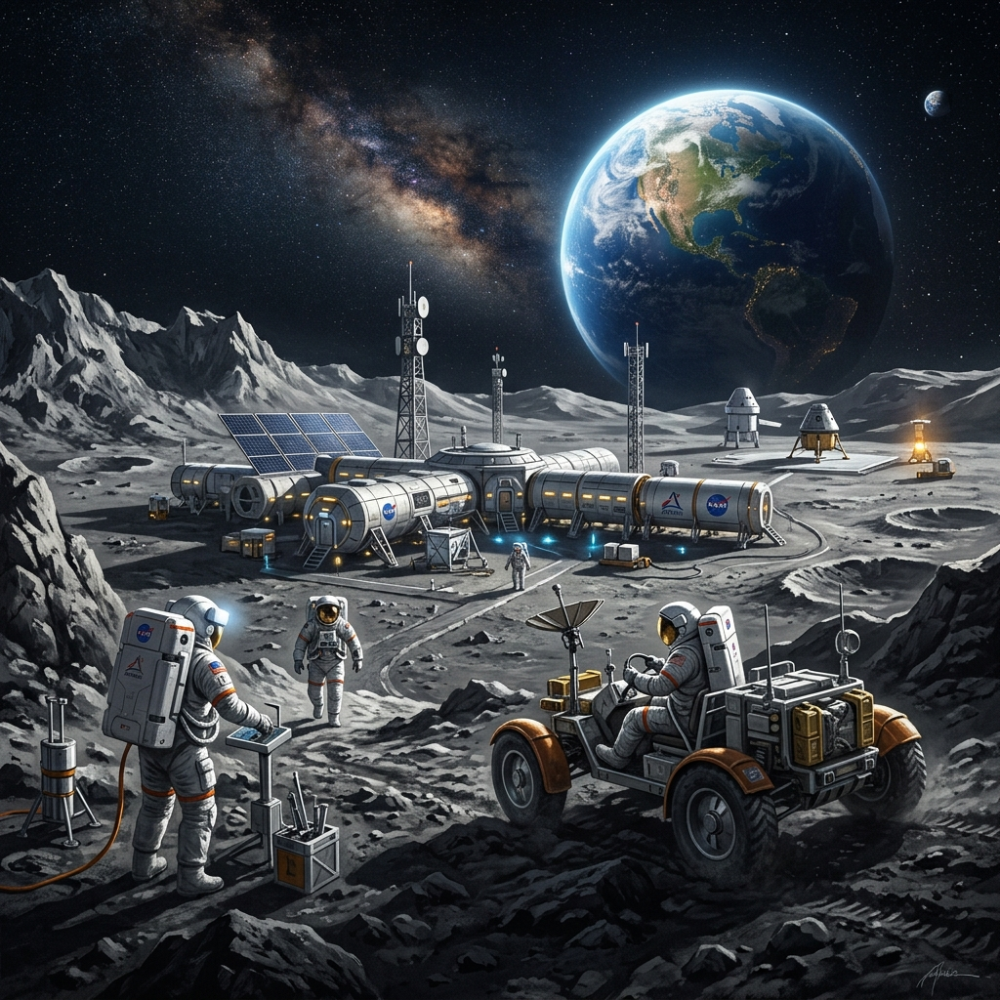

SYSTEM STATUS: ONLINE
VERSION: 2.4.1
UPTIME: 99.99%
Experience the interactive archive of lunar exploration, powered by L.U.N.A. system intelligence.
START EXPLORINGFirst human-made object to reach the Moon.
Neil Armstrong and Buzz Aldrin become the first humans to walk on the lunar surface.
India becomes the first nation to successfully land near the lunar south pole.

Returning humanity to the Moon to establish a sustainable presence.
First mission to return samples from the lunar far side.
First use of the Lunar Roving Vehicle.